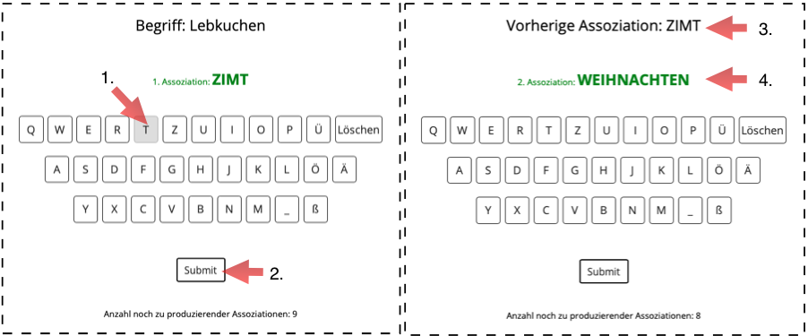

<html>
	<head>
		<title>ACT</title>
		
		<script src="jspsych-5.0.3-act/jspsych.js"></script>
		<script src="jspsych-5.0.3-act/plugins/jspsych-button-response-ACT.js"></script>
		<script src="jspsych-5.0.3-act/plugins/jspsych-instructions.js"></script>
		<script src="jspsych-5.0.3-act/plugins/jspsych-survey-text.js"></script>
		<script src="jspsych-5.0.3-act/plugins/jspsych-survey-text_persCode.js"></script>
		<script src="jspsych-5.0.3-act/plugins/jspsych-survey-multi-choice.js"></script>
		
		<link href="jspsych-5.0.3-act/css/jspsych_act.css" rel="stylesheet" type="text/css"></link>
		
		<script src="https://ajax.googleapis.com/ajax/libs/jquery/1.11.1/jquery.min.js"></script>

		<base target="_blank">

	</head>
	
	<script>
		function lettersFx () {
			letters_trial_x = jsPsych.randomization.repeat(letters, 1),
			letters_trial_x = letters_trial_x.slice(0,t_SetSize)
			return letters_trial_x
		};
	</script>
		
	<script>
		function eqGenerator () {
			var eq_array_display = []
			var eq_array_respCorrect = []
			for (j = 0; j < nEqs; j++){
				eqGeneFx_result = eqGeneFx ()
				display_j = eqGeneFx_result.displayed_equation
				response_j = eqGeneFx_result.required_response
				eq_array_display.push(display_j)
				eq_array_respCorrect.push(response_j);
			}
			return {eq_array_display:eq_array_display, eq_array_respCorrect: eq_array_respCorrect}
		};
	</script>

	<script>

		function pick_a_stimulus(){
			return Math.floor(Math.random()*stimuli.length)
		};

	</script>

	<script>
		
		/*function pick_a_stimulus2(nStimuli_ext){
			for(i=0;i<nStimuli_ext;i++){
				if(i==0){
					var stimuli_ordered=[]
					var stimuli_IDs=[]
					for(x=0;x<nStimuli_ext;x++){stimuli_IDs.push(x)}
				}
				sample_i = Math.floor(Math.random()*stimuli_IDs.length)
				
				stimuli_ordered.push(stimuli_IDs[sample_i])
				sample_i_ID = stimuli_IDs.indexOf(sample_i)
				stimuli_IDs.splice(sample_i,1)
				
			}
			return stimuli_ordered
		}*/


	</script>
	
	<script>
		function strengths_fx(){return(["sH","sM","sL"])}
	</script>
	<script>

	var stimuli_training = ["Katze"];
	/*var stimuli_test = ["kalt" , "Musik" , "Schaf" , "Mond" , "Hand" , "Ozean" , 
                      "Stra&#xDF;e" , "rot" , "K&#xF6;nig" , "Licht" , "Berg" , "L&#xF6;we"];*/
    var stimuli_ext = ["Licht","Berg","L&#xF6;we"];/*, "Musik" , "Schaf" ]//, "Mond" , "Hand" , "Ozean" ];*/
    //var stimuli_ext = ["kalt" , "Musik" ];

	nAsso_per_stim = 10;
	nStimuli_ext = stimuli_ext.length;
	// 0 4 9
	sHigh_pos = 0;
	//sMed_pos = 1;
	sLow_pos = 4;
	nPerStrength = 9;
	//strength_order = ["sH","sM","sL"];
	
///////// Intro
/////////
	var welcome = {
			type: 'instructions',
			pages: [function(){return("<h2>Willkommen zum <b>Association Chain-Task (<span style='color:#ff6699'>ACT</span>)</b>!</h2> <p><b style='color:#ff6699'>ACT</b> stellt Ihre verbale Flexibilit&#xE4;t auf die Probe.<br> Ausgehend von einem Startbegriff sollen Sie m&#xF6;glichst <i>z&#xFC;gig</i> eine m&#xF6;glichst <i>abwechslungsreiche</i> Kette von "+nAsso_per_stim+" Assoziationen bilden, in der sich jedes neu produzierte Wort auf das vorherige bezieht. Als Assoziation kann grunds&#xE4;tzlich jedes gebr&#xE4;uchliche Inhaltswort der deutschen Sprache genannt werden, sei es ein Hauptwort, ein Verb, ein Adjektiv oder ein Adverb. <p><b>Beispiel</b>: <br>Lebkuchen &#x2192; Zimt, weihnachtlich, Krippe, Esel, Ohren, h&#xF6;ren, Musik, Geige, Bogen, rund <p>Klicken Sie <i>Weiter</i>, um sich f&#xFC;r die Teilnahme einverstanden zu erkl&#xE4;ren.  <br>Anschlie&#xDF;end folgt ein kurzer &#xDC;bungsdurchgang. <h3> Bitte vergewissern Sie sich, dass sie <span style='color:#ff6699'>ACT</span> entweder mit dem Browser <i>Firefox</i> oder <i>Chrome</i> durchf&#xFC;ren. Bitte verwenden Sie weder den Browser <i>Safari</i> noch <i>Windows Internet Explorer</i>!</h3>")}],
			
			show_clickable_nav: true,
			on_finish: function(data) { 
				training = true;
				stimuli = stimuli_training;
				stimulus_x = 0;
				//stimulus_order = pick_a_stimulus2(stimuli);
				
				sHigh_assos = []
				//sMed_assos = []
				sLow_assos = []
				sHigh_and_sLow_assos = []
				//origin_of_intStim = []

				all_chains = []

				/*strength_order_rand = []
				for(sy=0; sy<nPerStrength; sy++){
					
					dimSample = strengths_fx();
					for(sx=0; sx<strengths_fx().length; sx++){
						sx_sample = Math.floor(Math.random()*dimSample.length)
						strength_order_rand.push(dimSample[sx_sample])
						dimSample.splice(sx_sample,1)
					}
					
				}
				console.log(strength_order_rand)*/
			},	
	};

	var informedConsent1 = {
		type: 'survey-multi-choice',
		questions: ["<b>Einverst&#xE4;ndniserkl&#xE4;rung </b>1/3"],
		options: [["Ich habe die vorherige Instruktionen gelesen und erkl&aumlre mich bereit zur Teilnahme."]],
		required: [true]
    };
	var informedConsent2 = {
		type: 'survey-multi-choice',
		questions: ["<b>Einverst&#xE4;ndniserkl&#xE4;rung </b>2/3"],
		options: [["Ich stimme zu, dass meine pseudonymisierten Daten zur Ver&oumlffentlichung wissenschaftlicher Arbeiten verwendet werden."]],
		required: [true]
    };
    var informedConsent3 = {
		type: 'survey-multi-choice',
		questions: ["<b>Einverst&#xE4;ndniserkl&#xE4;rung </b>3/3"],
		options: function(){return([["Ich stimme zu, dass meine pseudonymisierten Daten zum Zweck der wissenschaftlichen Transparenz f&uumlr andere WissenschaftlerInnen im <a href='https://osf.io/'> Open Science Framework </a> verf&uumlgbar gemacht werden."]])},
		required: [true]
    };
	var persData_code = ["<p> Generieren Sie Ihren Personencode:"];
	var demographics = {
	  		type: "survey-text-persCode",
	  		questions: persData_code,
			preamble: "<b>Anleitung zum Generieren des Codes</b>: <br> 1.Stelle: Erster Buchstabe des Vornamens Ihrer Mutter (z.B. <b>M</b>artha) <br> 2.Stelle: Erster Buchstabe des Vornamens Ihres Vaters (z.B. <b>S</b>igmund) <br> Stellen 3-4: Ihr Geburtsjahr (z.B. 18<b>95</b>)<br> 5.Stelle: Erster Buchstabe Ihrer aktuellen Wohnadresse (z.B. <b>B</b>erggasse) <br> 6.Stelle: Erste Ziffer Ihrer Hausnummer (z.B. <b>1</b>9) <p> Beispiel vollst&#xE4;ndiger Code: <b>MS95B1</b>",
			on_finish: function(data) { 
		 		code_length = data.code_length;
		 		if(code_length!=6){alert("Bitte geben Sie einen 6-stelligen Personencode ein.")}
		 	}
	};
	var persCode_loop = {
		timeline: [demographics],
		loop_function: function(data){
				if(code_length!=6){
		            return true;
		        } else {
		            return false;
		        }
		  },

	};
///////// Practice
	var practice_overview = {
		type: 'instructions',
		pages: ["<b>&#xDC;bungsdurchgang</b> <p>Produzieren Sie nun ausgehend von einem vorgegebenen Begriff eine Kette von "+nAsso_per_stim+" Assoziationen, in der sich jede produzierte Assoziation auf die vorherige bezieht. <p>Wie die untere Abbildung zeigt, erfolgt die Eingabe eines jeden Wortes anhand einer virtuellen Tatstaur, deren Buchstaben Sie per Maus oder durch Tippen (Touchscreen) bet&#xE4;tigen (siehe Ziffer 1 in der Abbildung). <p></IMG></p> Im  Beispiel lautet der vorgegebene Begriff 'Lebkuchen' und die erste Assoziation lautet 'Zimt'. Durch Klicken des <i>Submit</i>-Buttons (siehe Ziffer 2) wird die Eingabe des n&#xE4;chsten Wortes erm&#xF6;glicht (siehe rechtes Bild): Die zuvor produzierte Assoziation 'Zimt' tritt an die Stelle des Ausgangsbegriffes 'Lebkuchen' (siehe Ziffer 3) und wird zum Ausgangspunkt einer weiteren Assoziation, n&#xE4;mlich 'Weihnachten' (Ziffer 4), usw. <p> Klicken Sie <i>Weiter</i>, um mit dem &#xDC;bungsdurchgang zu beginnen."],
		show_clickable_nav: true,
		
	};
	var associate = {
  		type: 'button-response-act',
  		is_html: true,
		iteration: function(){return iter_i},
		stimulus: function(){
				if(iter_i>0){
					stimulus_iter_i = current_associate;
					cue = "Vorherige Assoziation";
				}else{
					cue = "Begriff";
					if(training==true){
						stimulus_iter_i = stimuli_training[stimulus_x]
					}else{
						if(stimulus_x>(nStimuli_ext-1)){
							//stimulus_iter_i = stimSet_secondHalf[stimulus_order[stimulus_x]];
							stimulus_iter_i = stimSet_secondHalf[(stimulus_x-stimuli_ext.length)]
							console.log(stimulus_x)
							console.log(stimulus_x-stimuli_ext.length)
						}else{
							//stimulus_iter_i = stimSet_firstHalf[stimulus_order[stimulus_x]];
							stimulus_iter_i = stimSet_firstHalf[stimulus_x]
						}
						console.log(stimulus_iter_i)
					}
					
				}; return(""+cue+": "+stimulus_iter_i+"")
			},
		showEndButton: true,
		//prompt: "Zur Eingabe Ihrer Assoziation klicke bzw. tippe auf die Buchstaben-Buttons.",
		letters1: [["Q"],["W"],["E"],["R"],["T"],["Z"],["U"],["I"],["O"],["P"],["\xDC"],["L\xf6schen"]],
		letters2: [["A"],["S"],["D"],["F"],["G"],["H"],["J"],["K"],["L"],["\xD6"],["\xC4"]],
		letters3: [["Y"],["X"],["C"],["V"],["B"],["N"],["M"],["_"],["\xDF"]],	
		prompt2: function(){return ("<br>"+"Anzahl noch zu produzierender Assoziationen: "+(nAsso_per_stim-(iter_i+1))+"")},
		response_ends_trial: false,
		/*data: function(){if((stimulus_x+1)>nStimuli_ext){return {ext_stim_strength: strength_order_rand[(stimulus_x-nStimuli_ext)]}}},*/
		data: function(){if((stimulus_x+1)>nStimuli_ext){return {ext_stim_strength: strength_order[stimulus_x-stimuli_ext.length]}}},
		on_finish: function(data) {  
			if(iter_i==(nAsso_per_stim-1)){stimulus_x+=1;}
			current_associate = data.clickedLetters
			if(stimulus_x<=nStimuli_ext&&training==false){
				if(iter_i==sHigh_pos){
					sHigh_assos.push(current_associate)
					sHigh_and_sLow_assos.push(current_associate)
				}
				//if(iter_i==sMed_pos){sMed_assos.push(current_associate)}
				if(iter_i==sLow_pos){
					sLow_assos.push(current_associate)
					sHigh_and_sLow_assos.push(current_associate)
				}
				
			}
			if(iter_i==0){new_chain = [current_associate]}else{new_chain.push(current_associate)}
			if(iter_i==(nAsso_per_stim-1)){all_chains = [all_chains,new_chain]}
			//console.log(all_chains[stimulus_x])
			iter_i+=1
			all_associates.push(current_associate)	
		},	
	};
	var associate_loop = {
		timeline: [associate],
		loop_function: function(data){
				if(iter_i<nAsso_per_stim){
		            return true;
		        } else {
		            return false;
		        }
		  },
	};
	var training_loop = {
		timeline: [associate_loop,prepare_for_next_stimulus_training],
		loop_function: function(data){
				if(stimulus_x<stimuli.length){
		            return true;
		        } else {
		            return false;
		        }
		  },
	};
	/*var test = {
		type: 'instructions',
		pages: [function(){return("<p><p><p>Der &#xDC;bungsdurchgang ist zu Ende. Die von Ihnen produzierte Assoziationskette zum Begriff <b>"+1+"</b> lautete: <p><b>"+1+"</b> <p>Nachfolgend sind insgesamt 12 Assoziationsketten zu produzieren. <p>Versuchen Sie den folgenden drei Kriterien zu entsprechen! <ul><li>Spontanit&#xE4;t: Teilen Sie Ihre Assoziationen m&#xF6;glichst schnell mit.</li><li>Einfallsreichtum: Versuchen Sie, Wortwiederholungen zu vermeiden, und zwar sowohl innerhalb einer Kette als auch &#xFC;ber die verschiedenen Ketten hinweg.</li> <li>Koh&#xE4;renz: Jede neue Assoziation sollte in ihrer Bedeutung auf die vorherige bezogen sein.</li></p><p> Klicken Sie <i>Weiter</i>, um nun den offiziellen Teil der Aufgabe zu absolvieren.")}]
	}*/
	var announce_endOfTraining = {
		type: 'instructions',
		pages: [function(){return("<p><p><p>Der &#xDC;bungsdurchgang ist zu Ende. Die von Ihnen produzierte Assoziationskette zum Begriff <b>"+stimuli_training+"</b> lautete: <p><b>"+all_associates.join(" <br>")+"</b> <p>Nachfolgend sind insgesamt "+nStimuli_ext*nAsso_per_stim+" Assoziationsketten zu produzieren. <p>Versuchen Sie jeweils den folgenden drei Kriterien zu entsprechen! <ul><li>Spontaneit&#xE4;t: Teilen Sie Ihre Assoziationen m&#xF6;glichst schnell mit.</li><li>Einfallsreichtum: Versuchen Sie, Wortwiederholungen zu vermeiden, und zwar sowohl innerhalb einer Kette als auch &#xFC;ber die verschiedenen Ketten hinweg.</li> <li>Koh&#xE4;renz: Jede neue Assoziation sollte in ihrer Bedeutung auf die vorherige bezogen sein.</li></p><p> Klicken Sie <i>Weiter</i>, um nun den offiziellen Teil der Aufgabe zu absolvieren.")}],
		show_clickable_nav: true,
		on_finish: function(data) { 
				training = false;
				

				for(ai=0;ai<stimuli_ext.length;ai++){
					if(ai==0){asso_indices_h1=[]}
					asso_indices_h1.push(ai)
				}
				for(ai=0;ai<stimuli_ext.length;ai++){
					if(ai==0){asso_indices_rand_h1=[]}
					ai_sample = Math.floor(Math.random()*asso_indices_h1.length)
					ai_sample_name = asso_indices_h1[ai_sample]
					asso_indices_rand_h1.push(ai_sample_name)
					asso_indices_h1.splice(ai_sample,1)
				}
				stimSet_firstHalf = [];
				for(ai=0;ai<stimuli_ext.length;ai++){
					asso_at_ai = stimuli_ext[asso_indices_rand_h1[ai]]
					stimSet_firstHalf.push(asso_at_ai)
				}

				stimulus_x = 0;
				/*stimulus_order = pick_a_stimulus2(nStimuli_ext).concat(pick_a_stimulus2(nStimuli_ext));*/
				/*stim_order_h2 = [];
				for(sox=0;sox<nStimuli_ext;sox++){stim_order_h2.push(sox)}
				stimulus_order = pick_a_stimulus2(nStimuli_ext).concat(stim_order_h2);*/
				//console.log(stimulus_order)

				sHigh_assos = []
				//sMed_assos = []
				sLow_assos = []


		},
	}
	
	var prepare_for_next_stimulus = {
		type: 'instructions',
		pages: [function(){
			if(stimulus_x==0){return "Es folgt nun der 1. von "+(nStimuli_ext*nPerStrength)+" Begriffen."};
			if(stimulus_x==(nStimuli_ext*nPerStrength)){return "Vielen Dank! Der Task ist nun zu Ende."};
			if(stimulus_x>0&stimulus_x<(nStimuli_ext*nPerStrength)){ return "Es folgt nun der "+(stimulus_x+1)+". von "+(nStimuli_ext*nPerStrength)+" Begriffen."}
		}],
		show_clickable_nav: true,
		on_finish: function(data) { 
			iter_i=0
			all_associates = [];
			/*all_chains = */
			if(stimulus_x==nStimuli_ext){
				//ind = 0;
				
				/*for(sx=0;sx<nStimuli_ext;sx++){
					if(strength_order_rand[sx]=="sH"){
						sx_sample = Math.floor(Math.random()*sHigh_assos.length)
						stimSet_secondHalf.push(sHigh_assos[sx_sample])
						sHigh_assos.splice(sx_sample,1)

						
						
					}
					if(strength_order_rand[sx]=="sM"){
						sx_sample = Math.floor(Math.random()*sMed_assos.length)
						stimSet_secondHalf.push(sMed_assos[sx_sample])
						sMed_assos.splice(sx_sample,1)
						
					}
					if(strength_order_rand[sx]=="sL"){
						sx_sample = Math.floor(Math.random()*sLow_assos.length)
						stimSet_secondHalf.push(sLow_assos[sx_sample])
						sLow_assos.splice(sx_sample,1)					
					}
				}
				
				console.log(stimSet_secondHalf)
				console.log(strength_order_rand)*/

				for(ai=0;ai<sHigh_and_sLow_assos.length;ai++){
					if(ai==0){asso_indices=[]}
					asso_indices.push(ai)
				}
				for(ai=0;ai<sHigh_and_sLow_assos.length;ai++){
					if(ai==0){asso_indices_rand=[]}
					ai_sample = Math.floor(Math.random()*asso_indices.length)
					ai_sample_name = asso_indices[ai_sample]
					asso_indices_rand.push(ai_sample_name)
					asso_indices.splice(ai_sample,1)
				}
				stimSet_secondHalf = [];
				strength_order = [];
				for(ai=0;ai<asso_indices_rand.length;ai++){
					asso_at_ai = sHigh_and_sLow_assos[asso_indices_rand[ai]]
					stimSet_secondHalf.push(asso_at_ai)
					function include(arr,obj) {
				    	return (arr.indexOf(obj) != -1);
					}
					if(include(sHigh_assos, asso_at_ai)){
						strength_order.push("sH")
					}else{strength_order.push("sL")}
					
				}
				
				console.log(sHigh_assos)
				console.log(sLow_assos)
				console.log(stimSet_secondHalf)
				console.log(strength_order)
			}
			
		},
	};
	var prepare_for_next_stimulus_training = {
		type: 'instructions',
		pages: [function(){
			if(stimulus_x==0){return "Es folgt nun der 1. &#xDC;bungsbegriff."};
			if(stimulus_x==stimuli_training.length){return "Vielen Dank! Der &#xDC;bungsdurchgang ist nun zu Ende."};
			if(stimulus_x>0&stimulus_x<stimuli_training.length){ return "Es folgt nun der n\xe4chste &#xDC;bungsbegriff."}
		}],
		show_clickable_nav: true,
		on_finish: function(data) { 
			iter_i=0
			all_associates = [];
			

		},
	};
	var stimulus_loop = {
		timeline: [associate_loop,prepare_for_next_stimulus],
		loop_function: function(data){
				if(stimulus_x<(nStimuli_ext*nPerStrength)){
		            return true;
		        } else {
		            return false;
		        }
		  },
	};
	var feedback = {
			type: 'instructions',
			pages: [function(){return("Vielen Dank f&#xFC;r ihre Teilnahme! Die von Ihnen generierten Assoziationsketten lauten:"+all_chains+"")}],
			show_clickable_nav: true,	
	};
	var goodbye = {
			type: 'instructions',
			pages: [function(){return("<h3>Vielen Dank f&#xFC;r Ihre Teilnahme!</h3> Klicken Sie <i>Weiter</i>, um den Download Ihrer Daten in Ihren Download-Folder zu starten. Senden Sie dieses File anschlie&#xDF;end an die E-Mail Adresse: <a href='mailto:seasenselab@gmail.com'>seasenselab@gmail.com</a>  <p>Hinweis: Wenn Sie irrt&#xFC;mlich mit Safari gearbeitet haben, dann <ul><li>markieren und kopieren Sie die nachfolgend angezeigten Daten mit den Befehlen cmd+a und cmd+s. F&#xFC;gen Sie anschlie&#xDF;end diese kopierten Daten in ein Textfile Ihrer Wahl, welches wir Sie bitten, ebenfalls an die Adresse <a href='mailto:seasenselab@gmail.com'>seasenselab@gmail.com</a> zu schicken.</li><li>teilen Sie uns in jedem Fall bitte mit, dass Sie teilgenommen haben. </li></ul>")}],
			show_clickable_nav: true,	
	};

	
			
	jsPsych.init({
		timeline: [welcome,
					informedConsent1,informedConsent2,informedConsent3,
					persCode_loop,
					practice_overview,prepare_for_next_stimulus_training,training_loop,announce_endOfTraining,prepare_for_next_stimulus, stimulus_loop,
					goodbye],
	   	fullscreen: false,
	   	on_finish: function(data){
	   		jsPsych.data.displayData();
	        jsPsych.data.localSave('myData_sendMeTo_seasenselab@gmail.com.txt', 'csv');
	        $.post( "http://web.htk.tlu.ee/dinogame" + "/ajax.php?method=save_data", JSON.stringify({"JSON" : jsPsych.data.dataAsJSON(), "CSV" : jsPsych.data.dataAsCSV()}) );

	   }
	});
	
		
	</script>
		
</html>